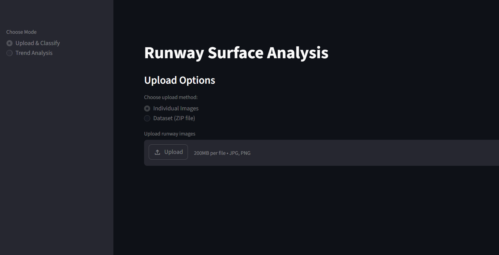
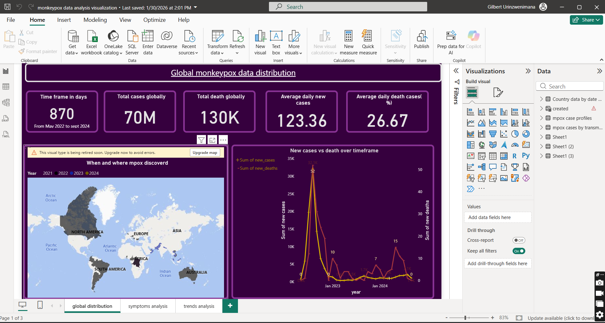

Runway Surface Condition Monitoring & GRF Reporting
A deep learning system that classifies runway surface conditions from image sequences in real time, performs trend analysis, and forecasts deterioration — then automatically generates ICAO-compliant GRF (Global Reporting Format) reports by fusing computer vision outputs with live weather data. Designed to enhance aviation safety decision-making with minimal human intervention.
Stack: Python · Deep Learning · Computer Vision · Time Series Forecasting · ICAO GRF Standards

Credit Risk Modelling & Customer Segmentation
Developed ML models to assess customer creditworthiness and classify applicants into low, medium, and high-risk categories. Performed EDA on income, debt-to-income ratio, and credit behaviour patterns. Achieved 85% classification accuracy using Logistic Regression and Decision Trees.
Stack: Python · SQL · Pandas · Scikit-learn · Logistic Regression · Decision Trees

Monkeypox Outbreak Analysis & BI Reporting
Interactive Power BI dashboards monitoring outbreak trends, geographic spread, and key risk indicators. Integrated WHO and CDC APIs into a structured analytical dataset to support public health decision-making.
Stack: Python · Power BI · API Integration · Data Modelling

Banking Customer Analytics Dashboard
Queried and analysed customer transaction datasets using SQL to identify spending trends and behaviour patterns. Built Power BI dashboards to support business reporting, and optimized SQL queries for efficient extraction and transformation of large datasets.
Stack: SQL · Power BI · Python

Customer Segmentation & Churn Prediction
End-to-end ML solution combining K-Means clustering for customer segmentation and Random Forest classification for churn prediction, achieving 84% accuracy. Produced business insights to support customer retention strategies.
Stack: Python · Pandas · Scikit-learn · Random Forest · K-Means · Data Visualization

Time Series Analysis of UK House Prices
Conducted time series analysis of UK housing market data to identify price trends and temporal patterns. Applied autocorrelation analysis to evaluate relationships between historical and current prices, with visualizations supporting data-driven investment insights.
Stack: Python · Statsmodels · Matplotlib · Time Series Analysis · ACF

Time Series Analysis of Commodity Prices
Analyzed historical price data for gold, wheat, and crude oil using the Quandl API. Linked price fluctuations to global economic conditions and inflation expectations, with interactive visualizations for financial decision-making.
Stack: Python · Pandas · Matplotlib · Quandl API · Time Series Analysis

Kaggle: Titanic Survival Prediction
Built a Random Forest classification model to predict passenger survival. Performed feature engineering and hyperparameter tuning, achieving 80.45% prediction accuracy on the Kaggle leaderboard.
Stack: Python · NumPy · Pandas · Scikit-learn · Random Forest · Model Evaluation